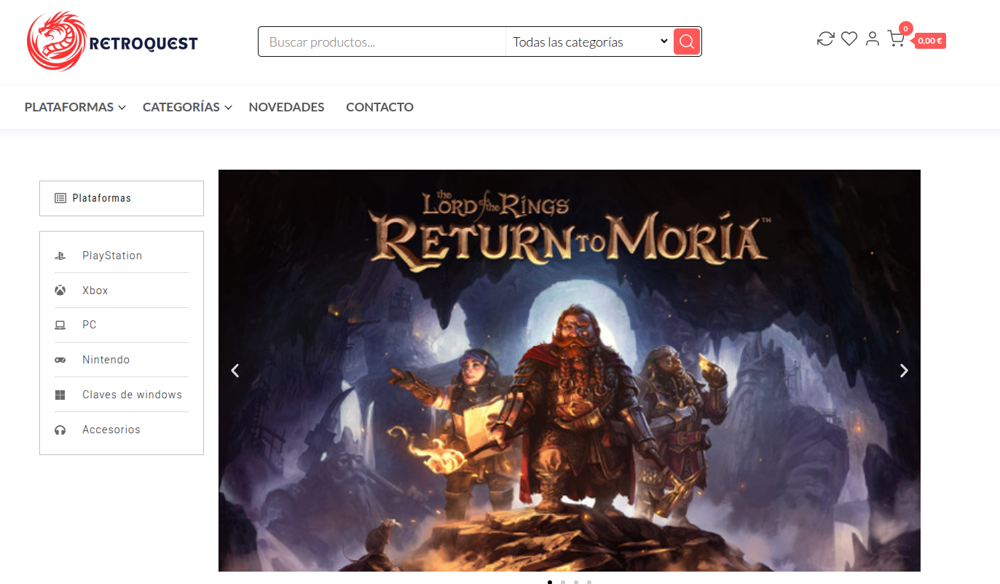

Retroquest Gaming
Plataforma E-Commerce especializada en nostalgia y coleccionismo.

Sobre el Proyecto
Retroquest Gaming nació de la necesidad de centralizar el mercado de videojuegos clásicos en una plataforma moderna y segura. El objetivo era crear un entorno que rindiera homenaje a la era dorada de las consolas de 8 y 16 bits sin sacrificar la funcionalidad actual.
El reto técnico consistió en desarrollar un sistema de inventario capaz de manejar estados de conservación específicos para productos usados, así como una experiencia de búsqueda fluida entre miles de títulos retro.
Características Clave
- Pasarela de pagos segura integrada con Stripe API.
- Sistema de valoraciones y reputación para vendedores y productos.
- Filtros avanzados por región (PAL/NTSC), consola y condición del producto.
- Panel de administración personalizado para la gestión de pedidos y stock.